In the Welcome to Android Studio dialog, click New Project.
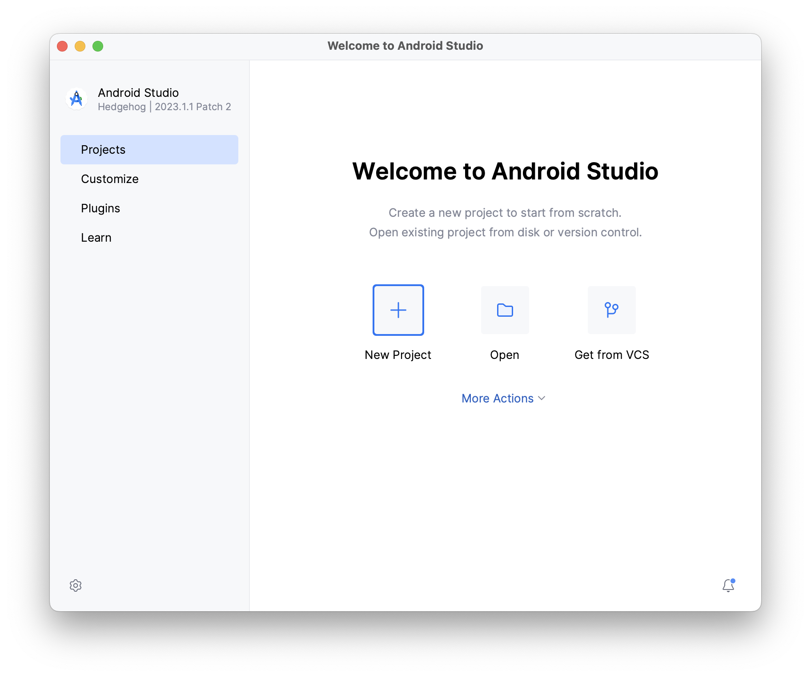
The New Project window opens with a list of templates provided by Android Studio.
Make sure the Phone and Tablet tab is selected.
Click the Empty Activity template to select it as the template for your project.
Click Next. The New Project dialog opens.
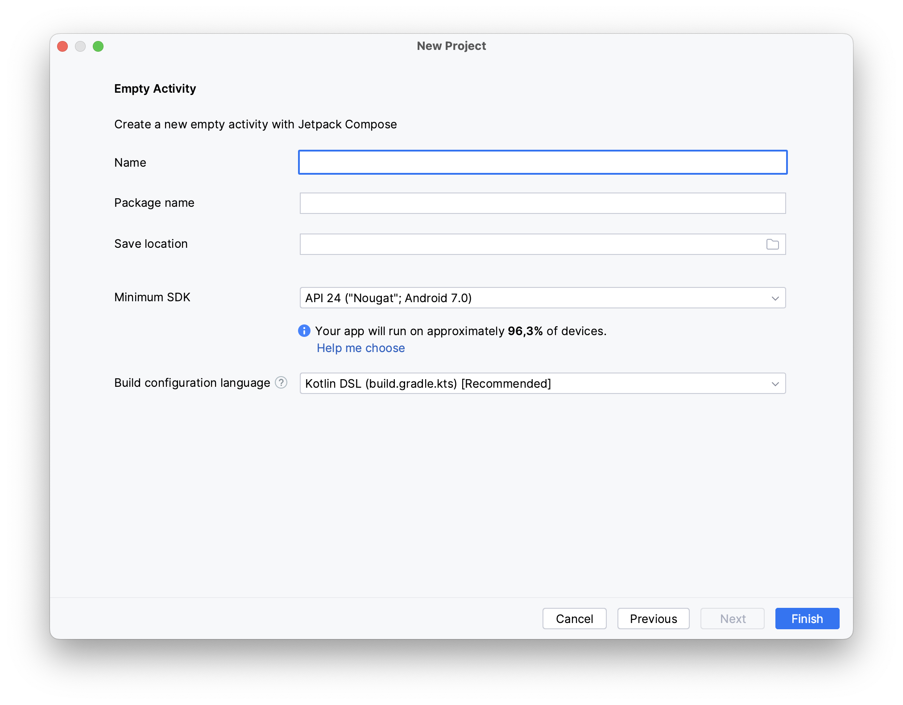
Configure your project as follows:
The Name field is used to enter the name of your project, for this codelab type "Lab 1".
Leave the Package name field as is. This is how your files will be organized in the file structure. In this case, the package name will be com.example.lab1. You can also use a domain name that your own in reverse order instead of com.example.
Leave the Save location field as is. It contains the location where all the files related to your project are saved. Take a note of where that is on your computer so that you can find your files.
Select API 24: Android 7.0 (Nougat) from the menu in the Minimum SDK field. Minimum SDK indicates the minimum version of Android that your app can run on.
Click Finish. This may take a while - this is a great time to get a cup of tea! While Android Studio is setting up, a progress bar and message indicates whether Android Studio is still setting up your project. It may look like this: 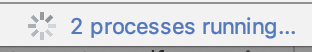
A message that looks similar to this informs you when the project set up is created: 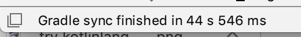
You may see a What's New pane which contains updates on new features in Android Studio. Close it for now.
Click Split on the top right of Android Studio 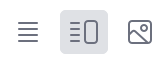 , this allows you to view both code and design. You can also click Code to view code only or click Design to view design only.
After pressing Split you should see three areas:
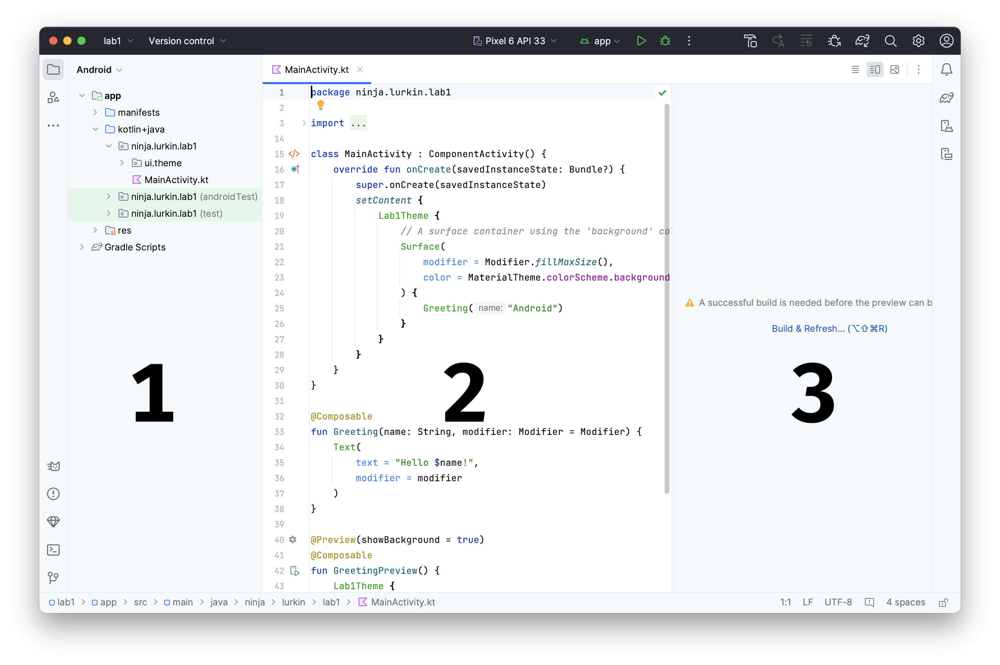
The Project view (1) shows the files and folders of your project
The Code view (2) is where you edit code
The Design view (3) is where you preview what your app looks like
In the Design view, you will see a blank pane with this text:
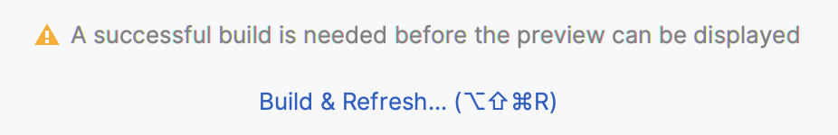
Click Build & Refresh. It may take a while to build but when it is done the preview shows a text box that says "Hello Android!". Empty Compose activity contains all the code necessary to create this app.
Find project files
In this section you will continue to explore Android Studio by becoming familiar with the file structure.
In Android Studio, take a look at the Project tab. The Project tab shows the files and folders of your project. When you were setting up your project the package name was com.example.lab1. You can see that package right here in the Project tab. A package is basically a folder where code is located. Android Studio organizes the project in a directory structure made up of set of packages.
If necessary, select Android from the drop-down menu in the Project tab.
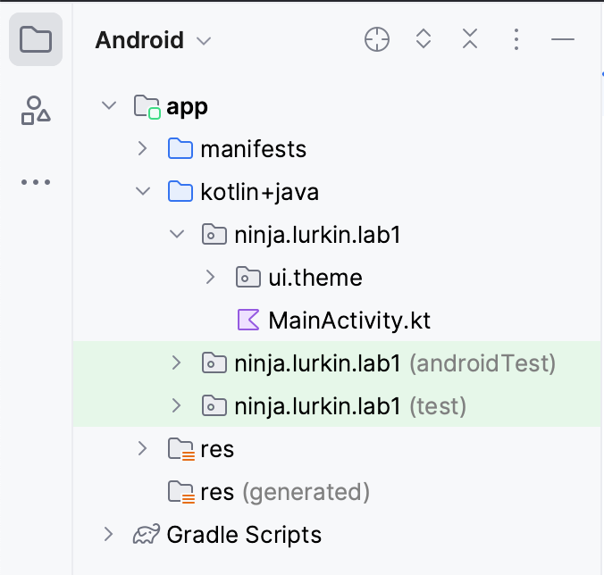
This is the standard view and organization of files that you use. It's useful when you write code for your project because you can easily access the files you will be working on in your app. However, if you look at the files in a file browser, such as Finder or Windows Explorer, the file hierarchy is organized very differently.
Select Project Source Files from the drop-down menu. You can now browse the files in the same way as in any file browser.
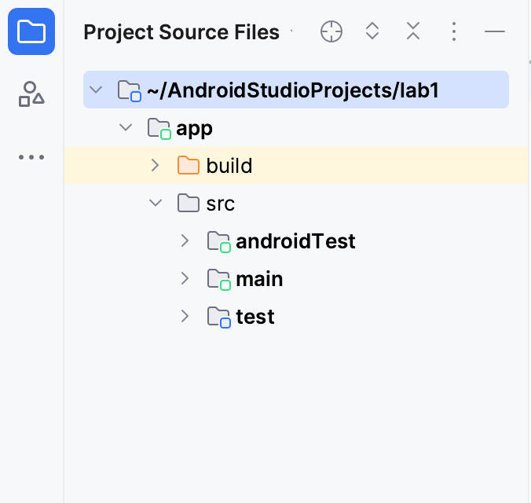
Select Android again to switch back to the previous view. You use the Android view for this course. If your file structure ever looks strange, check to make sure you're still in Android view.
Update the text
Now that you have gotten to know Android Studio, it's time to start making some modifications!
Look at the Code view of the MainActivity.kt file. Notice there are some automatically generated functions in this code, specifically the onCreate() and the setContent() functions.
class MainActivity : ComponentActivity() {
override fun onCreate(savedInstanceState: Bundle?) {
super.onCreate(savedInstanceState)
setContent {
Lab1Theme {
// A surface container using the 'background' color from the theme
Surface(
modifier = Modifier.fillMaxSize(),
color = MaterialTheme.colorScheme.background
) {
Greeting("Android")
}
}
}
}
}
The onCreate() function is the entry point to this Android app and calls other functions to build the user interface. In Kotlin programs, the main() function is the entry point/starting point of execution. In Android apps, the onCreate() function fills that role.
The setContent() function within the onCreate() function is used to define your layout through composable functions. All functions marked with the @Composable annotation can be called from the setContent() function or from other Composable functions. The annotation tells the Kotlin compiler that this function is used by Jetpack Compose to generate the UI.
Next, look at the Greeting() function. The Greeting() function is a Composable function, notice the @Composable annotation above it. This Composable function takes some input and generates what's shown on the screen.
@Composable
fun Greeting(name: String, modifier: Modifier = Modifier) {
Text(
text = "Hello $name!",
modifier = modifier
)
}
You've learned about functions before, but there are a few differences with composable functions:
You add the @Composable annotation before the function.
@Composable function names are capitalized.
@Composable functions can't return anything.
Right now the Greeting() function takes in a name and displays Hello to that person.
Update the Greeting() function to introduce yourself instead of saying "Hello":
@Composable
fun Greeting(name: String, modifier: Modifier = Modifier) {
Text(
text = "Hi, my name is $name!",
modifier = modifier
)
}
Android Studio should automatically update the preview.
Great! You changed the text, but it introduces you as Android, which is probably not your name. Next, you will personalize it to introduce you with your name!
The GreetingPreview() function is a cool feature that lets you see what your composable looks like without having to build your entire app. To enable a preview of a composable, annotate it with @Composable and @Preview. The @Preview annotation tells Android Studio that this composable should be shown in the design view of this file.
As you can see, the @Preview annotation takes in a parameter called showBackground. If showBackground is set to true, it will add a background to your composable preview.
Since Android Studio by default uses a light theme for the editor, it can be hard to see the difference between showBackground = true and showBackground = false.
Update the GreetingPreview() function with your name. Then rebuild and check out your personalized App!
You can pass multiple arguments to the annotation, as shown here.
@Preview(
showBackground = true,
showSystemUi = true,
name = "My Preview"
)
@Composable
fun GreetingPreview() {
Lab1Theme {
Greeting("LUR")
}
}
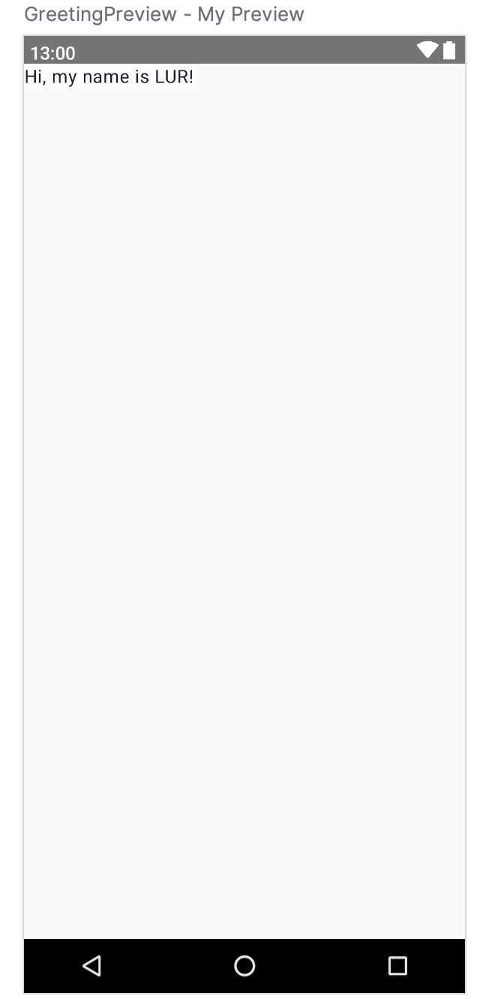
Change the background color
Now you have the introduction text, but it's a little boring! In this section, you learn to change the background color.
To set a different background color for your introduction, you'll need to surround your text with a Surface. A Surface is a container that represents a section of UI where you can alter the appearance, such as the background color or border.
To surround the text with a Surface, highlight the line of text, press (Alt+Enter for Windows or Option+Enter on Mac), and then select Surround with widget.
Choose Surround with Container.
The default container it will give you is Box, but you can change this to another container type. You will learn about Box layout later.
Delete Box and type Surface() instead.
To the Surface container add a color parameter, set it to Color.Cyan.
@Composable
fun Greeting(name: String, modifier: Modifier = Modifier) {
Surface(color = Color.Cyan) {
Text(
text = "Hi, my name is $name!",
modifier = modifier
)
}
}
You need to import the Color type.
import androidx.compose.ui.graphics.Color
In your code, the best practice is to keep your imports listed alphabetically and remove unused imports. To do this press Help on the top toolbar, type in optimize imports, and click on Optimize Imports.
Notice the updated preview.
Use Modifiers
Now your text has a background color, next you will add some space (padding) around the text.
A Modifier is used to augment or decorate a composable. One modifier you can use is the padding modifier, which adds space around the element (in this case, adding space around the text). This is accomplished by using the Modifier.padding() function.
Every composable should have an optional parameter of the type Modifier. This should be the first optional parameter.
Add a padding to the modifier with a size of 24.dp.
@Composable
fun Greeting(name: String, modifier: Modifier = Modifier) {
Surface(color = Color.Cyan) {
Text(
text = "Hi, my name is $name!",
modifier = modifier.padding(24.dp)
)
}
}
Add these imports to the import statement section.
You added text to your user interface. In this section, you learn how to change the size, text color, and other attributes that affect the appearance of the text element. You can also experiment with different font sizes and colors.
Scalable pixels
The scalable pixels (SP) is a unit of measure for the font size. UI elements in Android apps use two different units of measurement: density-independent pixels (DP), which you use later for the layout, and scalable pixels (SP). By default, the SP unit is the same size as the DP unit, but it resizes based on the user's preferred text size under phone settings.
In the MainActivity.kt file, scroll to the Text() composable in the Greeting() function.
Pass the Text() function a fontSize argument as a second named argument and set it to a value of 100.sp.
@Composable
fun Greeting(name: String, modifier: Modifier = Modifier) {
Surface(color = Color.Cyan) {
Text(
text = "Hi, my name is $name!",
fontSize = 100.sp,
modifier = modifier.padding(20.dp)
)
}
}
You need this import:
androidx.compose.ui.unit.sp
Notice the updated preview of the font size. The reason for overlapping message is you need to specify the line height.
Update the Text composable to include the line height.
@Composable
fun Greeting(name: String, modifier: Modifier = Modifier) {
Surface(color = Color.Cyan) {
Text(
text = "Hi, my name is $name!",
fontSize = 100.sp,
lineHeight = 116.sp,
modifier = modifier.padding(20.dp)
)
}
}
Student Card
Let's create a Student Card App!
Rename the Greeting() function by right click its name and select Refactor and then Rename...
Just pass the value of the name parameter to the Text composable.
Pass the function a matricule parameter of type String for your signature.
After the name Text composable, add another Text composable that accepts a text argument set to the matricule value.
Add a fontSize named argument set to a value of 36.sp.
Add the matricule parameter to the two calls to the StudentCard() function in GreetingPreview() and in onCreate().
@Preview(
showBackground = true,
showSystemUi = true,
name = "My Preview"
)
@Composable
fun GreetingPreview() {
Lab1Theme {
StudentCard("Quentin Lurkin", "LUR")
}
}
Notice the preview.
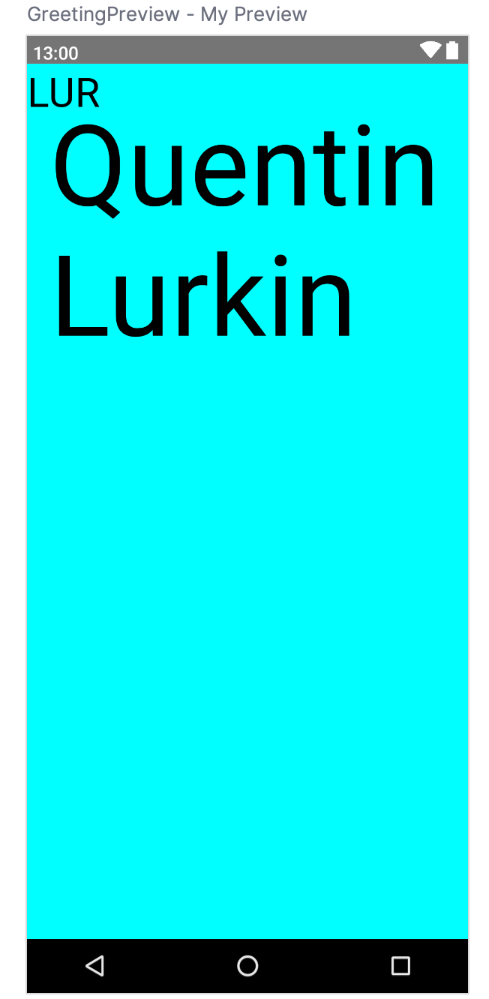
A composable function might describe several UI elements. However, if you don't provide guidance on how to arrange them, Compose might arrange the elements in a way that you don't like. For example, the previous code generates two text elements that overlap each other because there's no guidance on how to arrange the two composables.
Arrange the text elements in a row and column
UI Hierarchy
The UI hierarchy is based on containment, meaning one component can contain one or more components, and the terms parent and child are sometimes used. The context here is that the parent UI elements contain children UI elements, which in turn can contain children UI elements. In this section, you will learn about Column, Row, and Box composables, which can act as parent UI elements.